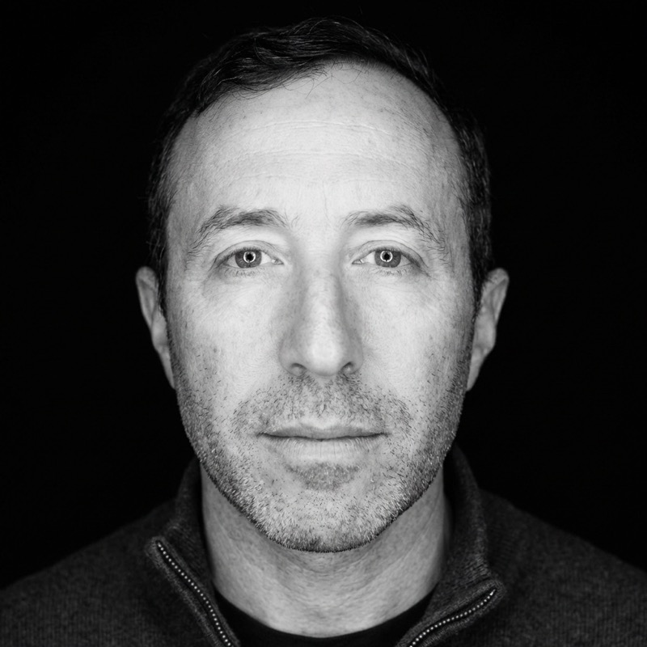
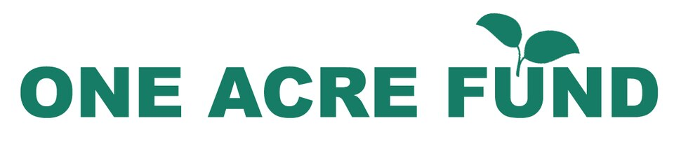
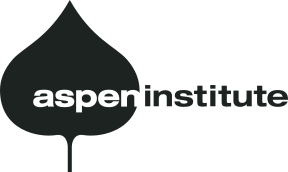
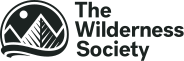

$1.7M → $34M
Growing fundraising through a crisis
Grew Burning Man Project's fundraising program twentyfold during the pandemic, and launched its first-ever major gifts program, securing multiple seven-figure gifts.
I help mission-driven organizations build lasting relationships with the people who fund them: individuals, family offices, and foundations that want their giving to change something.
Get in touch About me
For nearly 20 years I've designed and scaled philanthropic programs, including building major gifts programs from scratch.
I started as an organizer in the American West, running campaigns and coalitions that protected public lands across California. That work taught me to connect what a program achieves with what people care about most, and it's still at the heart of how I work with donors.
Today I build relationships with ultra-high-net-worth individuals, family offices, and foundations across the West Coast. Closer to home, I founded the Jewish Pride Fund, a giving circle supporting Jewish and LGBTQ charities, and served on the board of the San Francisco Jewish Federation.



Grew Burning Man Project's fundraising program twentyfold during the pandemic, and launched its first-ever major gifts program, securing multiple seven-figure gifts.
Led grantmaking and training across 65 rural grassroots organizations at Conservation Lands Foundation, helping secure nine national monument designations.
Directed federal policy campaigns for The Wilderness Society, building coalitions with policymakers and advocates to secure lasting protections.
Built a new development program for the Aspen Global Leadership Network and designed a multi-year endowment campaign for its future.
Cultivating and closing major gifts from UHNW individuals, foundations, and family offices, with immersive donor experiences that turn supporters into partners.
Building philanthropic pipelines, endowment campaigns, and grantmaking portfolios that give organizations durable funding.
Leading teams across development, communications, and membership, and aligning program impact with what donors care about.
CRM, pipeline management, and staff mentorship, working with executives and boards on multi-year campaigns.